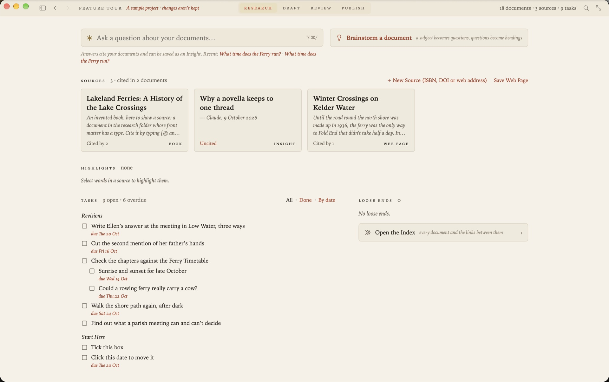
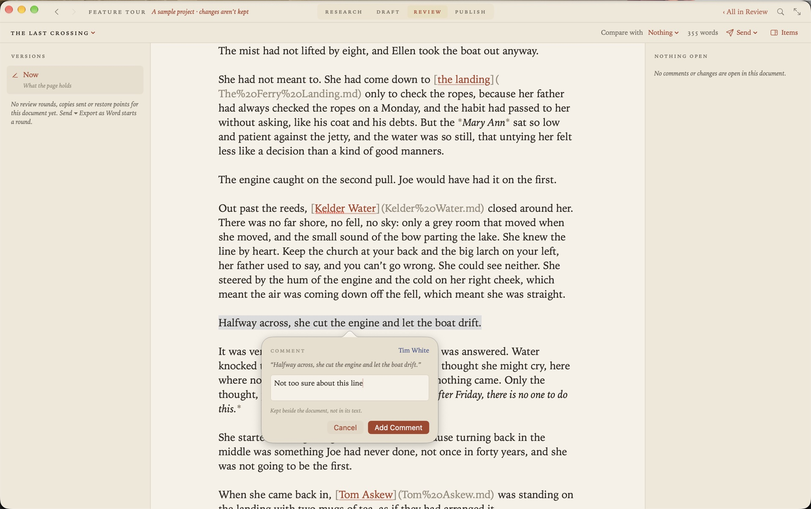
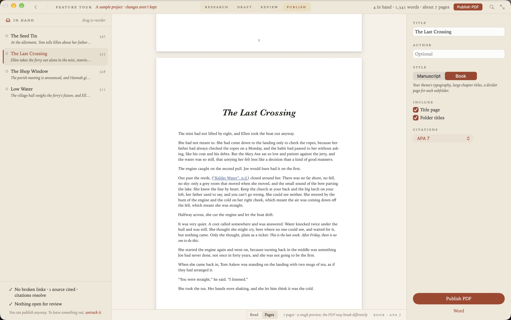
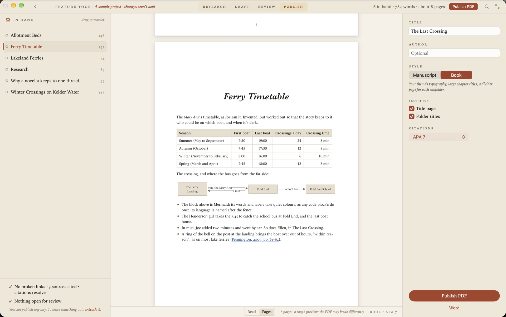
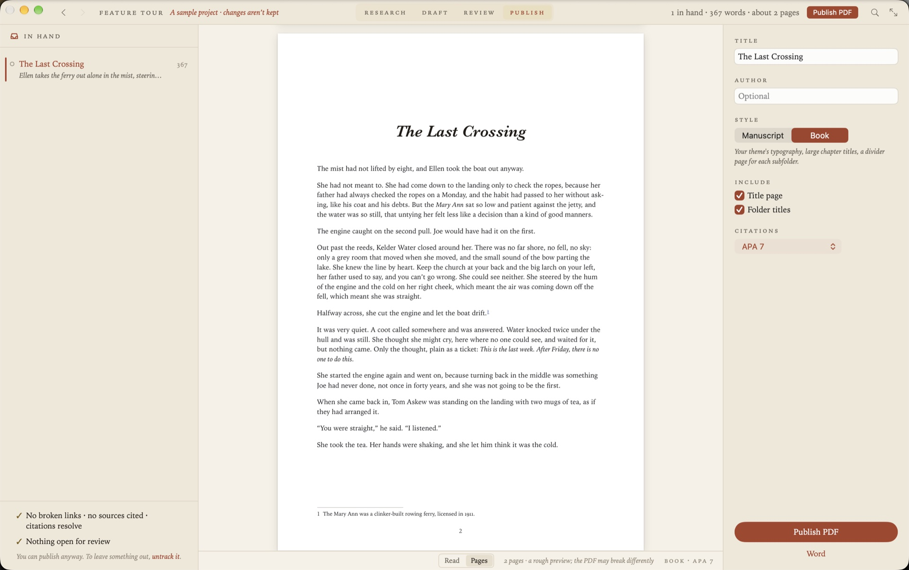

01
Research
Make a plan for your project. Collect your research from websites, books and papers so you can cite it later. Bring together all your tasks in one list.

02
Draft
A pure Markdown writing experience, free from distraction. Find interesting links between your documents and brainstorm ideas with the on-device model.
03
Review
Share your documents with colleagues & peers and extract their feedback. Finalise your sequence as you prepare to publish.

04
Publish
Publish your manuscript in PDF or Word Doc, complete with citations and formatting. Publish your project as a website with one click.


